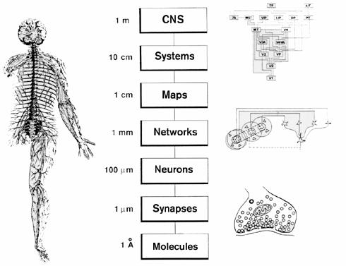

![[[@sejnowski2014putting]](https://doi.org/10.1038/nn.3839)](https://media.springernature.com/lw685/springer-static/image/art%3A10.1038%2Fnn.3839/MediaObjects/41593_2014_Article_BFnn3839_Fig1_HTML.jpg?as=webp)


![[[@Williamson2012-uj]](http://dx.doi.org/10.3389/fnhum.2012.00184)](http://www.frontiersin.org/files/Articles/18691/fnhum-06-00184-HTML/image_m/fnhum-06-00184-g003.jpg)
{kind=link}
- Spatial vs. temporal resolution
- Structural methods (parts, sizes, connectivity)
2022-01-18 07:36:21
Prelude (9:01)
Today’s topics
- History of neuroscience
- Levels of analysis
- Methods to the madness
Warm-up
Neuroscience is harder than physics because…
- A. The brain has more parts than any other physical entity we know about.
- B. Physicists have largely ignored biology.
- C. Nervous systems are influenced by multiple factors we can’t (yet) measure effectively.
- D. Physicists only study “toy” problems.
Neuroscience is harder than physics because…
- A.
The brain has more parts than any other physical entity we know about. - B.
Physicists have largely ignored biology. - C. Nervous systems are influenced by multiple factors we can’t (yet) measure effectively.
- D.
Physicists only study “toy” problems.
Systems have all of the following components EXCEPT:
- A. Boundaries
- B. Components
- C. Interactions among components
- D. Inputs and outputs
- E. Readily predictable behavior
Systems have all of the following components EXCEPT:
- A. Boundaries
- B. Components
- C. Interactions among components
- D. Inputs and outputs
- E. Readily predictable behavior
History of neuroscience
Why study history?
- What can observation tell us about brain and behavior?
- Vital role of tools/methods/techniques in discovery
- “If I have seen further, it is by standing on the shoulders of giants.” – Isaac Newton, 1676
What did early humans know about the mind and brain?
- Mental functions controlled by organs in the head, i.e., the brain
- Mental functions can be influenced by substances we consume
- Head injury can impair behavior and thinking
- Something flows from brain to body via nerves
Why didn’t they know more?
Why didn’t they know more?
- A. Limited technology.
- B. Limited cultural support for systematic observation & description. = SCIENCE
- C. Lack of ability to use knowledge even if it were acquired.
The body as machine (René Descartes – mid 1600’s)
Descartes’ ‘reflexes’
- Reflexes “reflect” events in the world
- Not the same as voluntary functions
Descartes’ reflexes

Descartes’ ‘dualism’
- Reflexes and animal “minds” are physical, machine-like
- Human mind is not
- “Dual” influences on behavior
- Physical + spiritual
- Soul controls body via pineal gland
- Causes muscles to “inflate”
Pineal gland

Do you agree with Descartes?
- A. Yes, human minds are fundamentally different from animal minds. The human mind is influenced by both physical and extraphysical processes.
- B. No, human minds are similar to animal minds. The human mind arises solely from physical processes.
How would you test Descartes idea about the role of the pineal gland?
The lessons from history
- Neuroscience shaped by new methods, tools
- Neuroscience shaped by great debates
- Mind == brain debate
- Are functions local or distributed?
- Do neurons connect like pipes or pass info like relay runners?
- Forms at multiple levels of analysis contribute to function
Levels of analysis
Spatial resolution

Spatial and Temporal Resolution
Your turn
- What’s a micro (spatially small) influence on/aspect of behavior?
- What’s a macro (spatially large)…
- What’s a micro (temporally short)…
- What’s a macro (temporally long)…
Why does this matter?
- Different methods, different levels of analysis
- Challenge of linking phenomena across levels
- How does the micro affect macro or vice versa?
- Challenge of interpretation
Neuroscience methods
Methods to the madness
- Tools in the neuroscientist’s toolkit
- What they tell us, and what they don’t
Evaluating methods
- What question does method X answer?
- What are we measuring?
- Structure
- Activity
- Strengths & Weaknesses
- Cost (time/$)
- Invasiveness
- Spatial/temporal resolution
Spatial and Temporal Resolution
Types of methods
- Structural
- What are the parts?
- How do they connect?
- Functional (next time)
- What do the parts do?
Mapping structures
- Cell/axon stains
- Golgi stain – whole cells
- Nissl stain – cell bodies only
- Cellular distribution, concentration, microanatomy
Golgi stain

- Soak tissue in Potassium Dichromate (\(K_2Cr_2O_7\)) then apply Silver Nitrate (\(AgNO_3\))
- Complete nerve cells, but only 1-5% of total
- Santiago Ramon y Cajal argued for neuron doctrine, shared 1906 Nobel Prize with Golgi
Nissl stain

- Only cell bodies
- Density of staining ~ cell density/number
Histochemical tracers

Retrograde vs. anterograde tracers
- Neuron information flow polarized–flows in one direction
- ≠ electronic wires, but like pipes
- Retrograde (from axon terminal to cell body)
- Anterograde (from cell body to axon terminal)
Two-photon microscopy
“If understanding everything we need to know about the brain is a mile, how far have we walked?” – J. Lichtman
Clarity
Evaluating cellular techniques
- Pros:
- High spatial resolution
- Cons:
- Poor temporal resolution
- Invasive
Computed axial tomography (CAT)
- Computed tomography CT
- X-ray based
Tomography

Tomography
CT scan of stroke

Magnetic Resonance Imaging (MRI)
Magnetic Resonance Imaging (MRI)
- Magnetic resonance
- Some common isotopes (e.g., H) & complex molecules have a magnetic dipole
- Axes align with strong magnetic field
- When alignment perturbed by radio frequency (RF) pulse, speed of realignment varies by tissue
- Realignment emits RF signals
- How MRI works
Types of MRI
- Structural
- Functional
Structural MRI of the brain
Structural MRI
- Reveals tissue density/type differences
- Gray matter (neurons & dendrites & axons & glia) vs. white matter (mostly axons)

Diffusion tensor imaging (DTI)

Diffusion tensor imaging (DTI)
- Type of structural MRI
- Measures patterns of movement/diffusion of \(H_{2}O\)
- Reveals integrity/density of axon fibers
- Measure of connectivity
MR Spectroscopy
Voxel-based morphometry (VBM)
Voxel-based morphometry (VBM)
- Voxels (volume-based elements)
- like pixels in an image, but volumes of tissue
- Morphometry, measure (“metry”) form/morphology
- How does brain size or thickness vary by age, disease status, etc.?
Main points
Next time…
- Functional neuroscience methods
References
Eames Office. (2010, August). Powers of ten™ (1977). Youtube. Retrieved from https://www.youtube.com/watch?v=0fKBhvDjuy0
National Geographic. (2014, January). Beautiful 3-D brain scans show every synapse | national geographic. Youtube. Retrieved from https://www.youtube.com/watch?v=nvXuq9jRWKE
NeuroBriefs. (2011, June). The ascent: A brief history of the brain. Youtube. Retrieved from https://www.youtube.com/watch?v=S0HKupSZq8k
Sejnowski, T. J., Churchland, P. S., & Movshon, J. A. (2014). Putting big data to good use in neuroscience. Nature Neuroscience, 17(11), 1440–1441. https://doi.org/10.1038/nn.3839
Williamson, P. C., & Allman, J. M. (2012). A framework for interpreting functional networks in schizophrenia. Frontiers in Human Neuroscience, 6, 184. https://doi.org/10.3389/fnhum.2012.00184